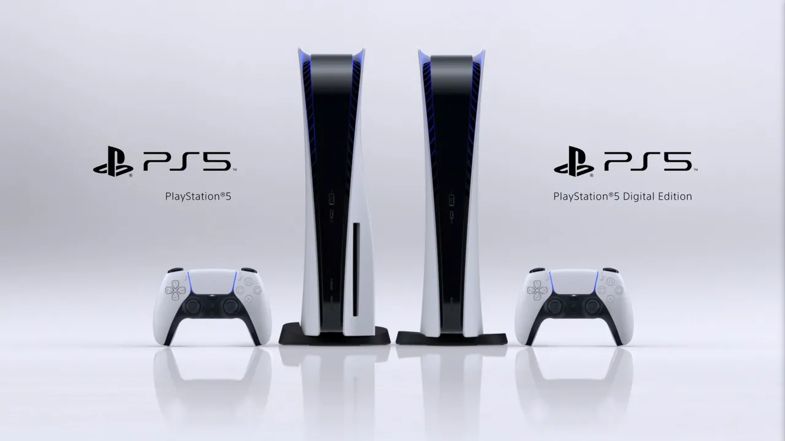
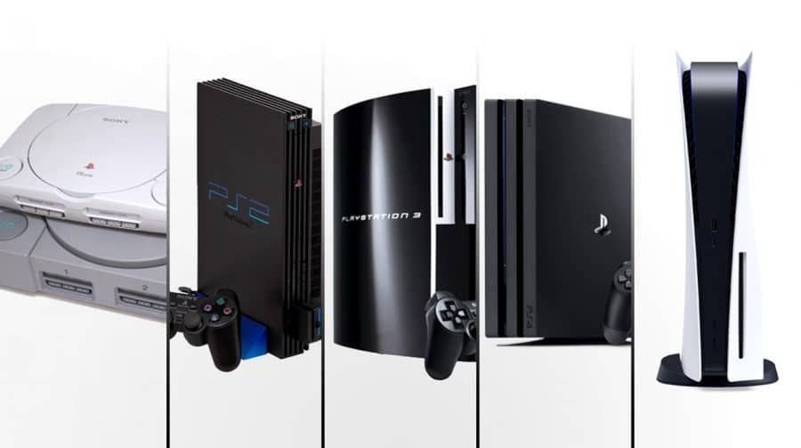
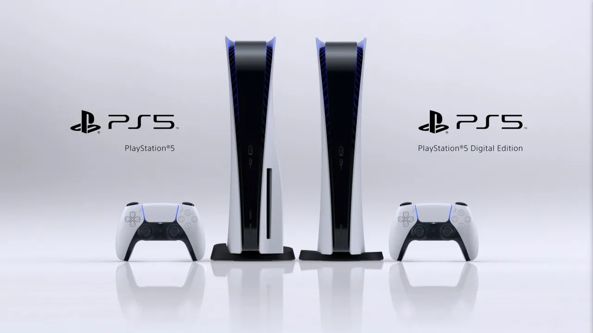
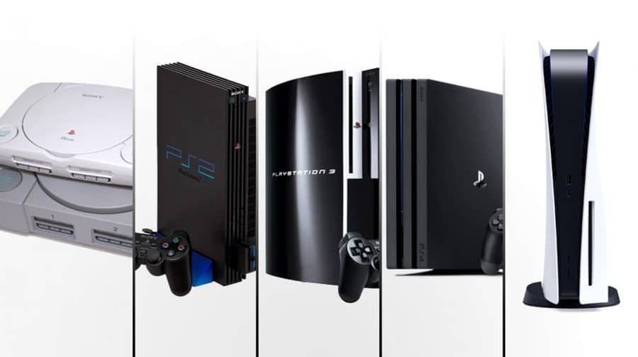
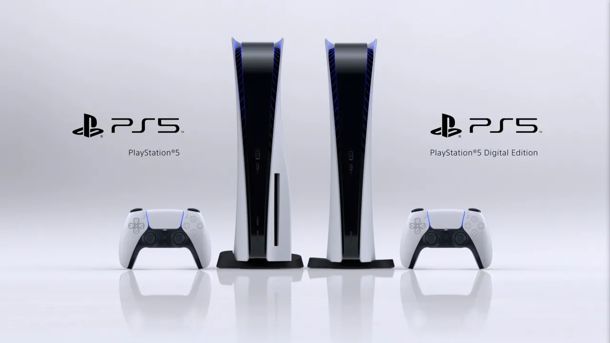
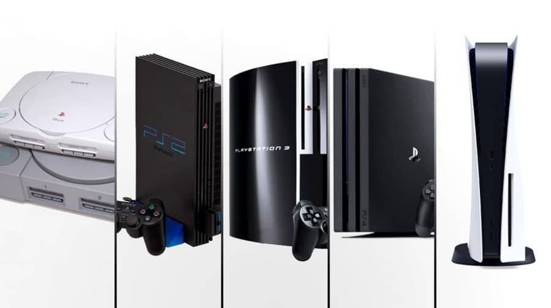
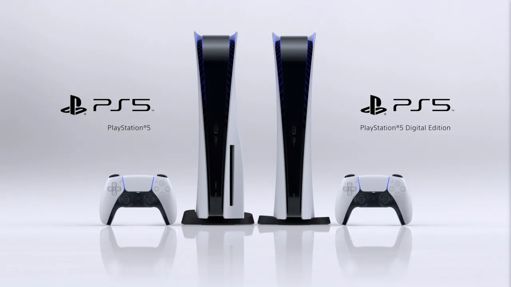
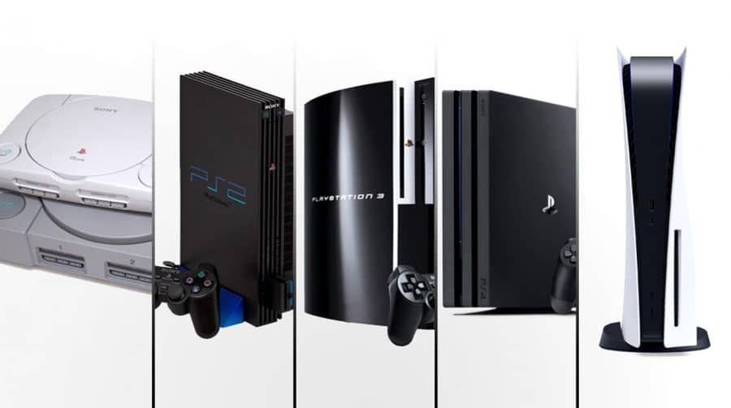

A Sony foi fundada em 1946 em Tóquio, Japão. Inicialmente, a empresa era um pequeno laboratório de eletrônicos, mas cresceu rapidamente para se tornar uma das maiores empresas de eletrônicos do mundo. Ela é conhecida por uma ampla gama de produtos, desde eletrônicos de consumo até entretenimento.
O primeiro console PlayStation, conhecido como PlayStation 1 ou PS1, foi lançado em 1994. Ele foi um grande sucesso e ajudou a estabelecer a Sony como uma potência na indústria de jogos. Desde então, a Sony lançou várias gerações de consoles PlayStation.
Lançado em 2000, o PlayStation 2 (PS2) se tornou o console mais vendido de todos os tempos, com mais de 155 milhões de unidades vendidas. Ele também introduziu o conceito de jogos em DVD e ofereceu uma biblioteca vasta e variada de jogos.
O PlayStation 3 (PS3), lançado em 2006, trouxe capacidades de alta definição, reprodutores de Blu-ray e uma ampla gama de recursos multimídia. Foi um passo importante na convergência de entretenimento doméstico e jogos.
Lançado em 2013, o PlayStation 4 (PS4) continuou a dominar o mercado de consoles. Ele trouxe gráficos de alta qualidade, jogos online aprimorados e uma variedade de serviços de entretenimento.
Lançado em 2020, o PlayStation 5 (PS5) é a mais recente iteração da série. Ele traz gráficos de última geração, tempos de carregamento ultrarrápidos e uma ênfase na experiência de jogo imersiva.
A Sony e seus consoles PlayStation desempenharam um papel significativo na evolução da indústria de jogos, introduzindo avanços tecnológicos, experiências imersivas e inovações na forma como consumimos entretenimento digital.
A Microsoft Corporation é uma das principais empresas de tecnologia do mundo, fundada por Bill Gates e Paul Allen em 1975. A empresa é conhecida por uma variedade de produtos e serviços, incluindo o sistema operacional Windows, a suíte Office, o serviço em nuvem Azure e seus consoles de videogame Xbox.
O Xbox Original, lançado em 2001, foi o primeiro console da Microsoft. Introduziu a marca Xbox no mercado de videogames e destacou-se por sua potência e pelo suporte a jogos online através do Xbox Live. Apresentou títulos populares como "Halo: Combat Evolved".
O Xbox 360, lançado em 2005, se tornou um dos consoles mais vendidos da sua geração. Introduziu o controle sem fio e uma biblioteca expansiva de jogos. Popularizou o conceito de conquistas (achievements) nos jogos.
O Xbox One, lançado em 2013, trouxe melhorias no hardware e gráficos. Foi projetado para ser um centro de entretenimento doméstico, oferecendo integração com serviços de streaming. Incluiu o Kinect como acessório inicial, permitindo interações por gestos e comandos de voz.
Lançados em 2020, o Xbox Series X e Series S são os consoles de próxima geração da Microsoft. Apresentam tempos de carregamento ultra-rápidos, gráficos de alta qualidade e desempenho superior. São compatíveis com a retrocompatibilidade, permitindo jogar títulos das gerações anteriores. Introduziram o Xbox Game Pass, um serviço de assinatura de jogos amplamente elogiado.
A linha de consoles Xbox da Microsoft desempenhou um papel significativo na indústria de videogames, oferecendo opções para jogadores de todas as idades e preferências. Cada geração trouxe avanços tecnológicos e jogos populares que contribuíram para o sucesso contínuo da marca Xbox.
A Nintendo Corporation é uma das empresas de videogame mais icônicas do mundo, conhecida por criar algumas das franquias mais amadas e consoles inovadores da história dos jogos eletrônicos. Fundada em 1889, a Nintendo começou como uma empresa de cartas de baralho e, ao longo dos anos, se tornou líder no setor de videogames.
O NES, lançado em 1983, foi o primeiro console de sucesso da Nintendo e um dos consoles mais importantes da história dos videogames. Ele apresentou jogos icônicos como "Super Mario Bros." e "The Legend of Zelda".
O SNES, lançado em 1990, construiu o sucesso do NES e trouxe gráficos aprimorados e mais poder de processamento. Apresentou jogos como "Super Mario World" e "The Legend of Zelda: A Link to the Past".
O Nintendo 64, lançado em 1996, foi um marco na indústria devido à sua tecnologia 3D e seu inovador controle com joystick. Jogos como "Super Mario 64" e "The Legend of Zelda: Ocarina of Time" se tornaram clássicos.
O GameCube, lançado em 2001, apresentou um design compacto e jogos notáveis, incluindo "Super Smash Bros. Melee" e "The Legend of Zelda: The Wind Waker".
O Wii, lançado em 2006, inovou com seu controle de movimento, permitindo uma jogabilidade mais interativa. Títulos populares incluem "Wii Sports" e "Super Mario Galaxy".
O Nintendo Switch, lançado em 2017, é um console híbrido que pode ser usado tanto como um console de mesa quanto como um console portátil. Ele trouxe jogos como "The Legend of Zelda: Breath of the Wild" e "Animal Crossing: New Horizons".
A Nintendo continua a ser uma força importante na indústria de videogames, trazendo inovação e entretenimento para jogadores de todas as idades. Sua dedicação à qualidade e criatividade resultou em muitas das franquias de jogos mais amadas e duradouras do mundo.